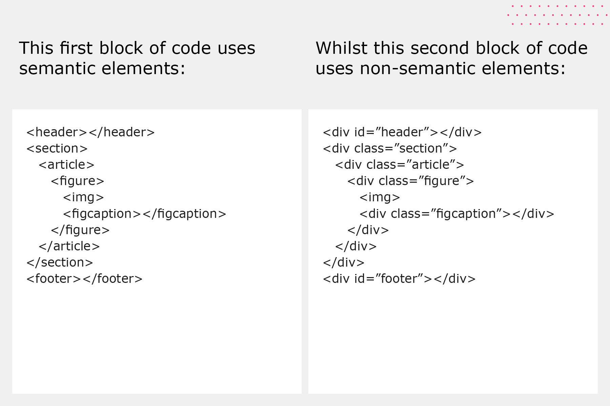

HTML is a hyper text markeup language, ther are some tages which we used .Its have 6 heading tage , Bold tage, Pragrap Tage , Italic tage , Underline tage , Big tag,Small Tage.
This is bold tage
This is italic tage
This is under line tage
This is big tagThis is the link and soure tage
"other website linke called Abslut link , and you owen website linke called Relative link .
Some of example:
Ancher tag , alt tag , src tage , img tage
How to image or photo insert in your owen website
If your seved link in another folder then you write /folder name/your file name in anchor tage.
Alt tage is used which image insert your web pages,theare altermate name will be write in alt tage .


Subscript or Super script tage
Sub script tage : H2SO4, H2O , O2, CO2, Caco3
Super script tage: (a+b)2=a2+2ab+b2 , (a+b)3= a3+3a2b+3ab2+b3Pre tage
Pre tage used if you want space or next line then you used it.
as example : I , I live in inida,Iam a Engineer my branh is Elecetonics and communication Engineering.
Page layput techinique

Its have two tage one is Semantaci Tag and another one isNon Semantaci tag.
Using Semantic tage : heder,main,footer. its basical used any web pages theare hading section , main section, footer section
Non semantic Tag or Div Tag
Sapn tag:Span is also a container used for other html elemnts ,inline elements (takes width as per size).
Example of some span tag : a,img,buttan,small,select,sub,super,big,i,etc.
Inside man tage
Sectiontage,arcticaltag,asidetage, How they workes.
Section tage used :For section on your page or line; artical tag used:For an artical on your page, eg:Something write about youe self.
Revisting Anchor tag or link attributes
It's basically used in this case clickebel tage ,eg name clickebel,photo clickebel. An it's mainly used In one clickebel open a new tabe.
clickebeltage or new tab open comment eg: a href="htps://google.com" target="_main">Google a (Hear target=" " Generated a new opening tage. )
IMAGE TAGE:

List in HTML
List are used to represent real life list data:one is unordered(ul) and another one is ordered(ol)
Table
Tables are used to represent rellife able data.We used 3 type of tag in html.
Example :Thead & Tbody
Thead or Tbody tage
thead=to wrap table head
tbody=to wrap table body
The form element
Form are used to collect data from user, Eg : Name, e-mail,phone no.sigin,Singup,login,etc
Action attribute is used to difine what action need to be parformd when a form is submitted.
Example: < from action="/action.php">
Form Element : Input, Example:< input type="text" placeholder="Name">
Click the "Submit" button and the form-data will be sent to a page on the server called "action_page.php".
Click on one of the text labels to toggle the related Radio button:
The html id's attribute is used to specify a unique id for an HTML element. You cannot have more than one element with the same id in an HTML document. Example
Chake Box The checkbox is shown as a square box that is ticked (checked) when activated. Checkboxes are used to let a user select one or more options of a limited number of choices.Example.
Textarea tages it should be take form user collection ther feedback form any issu help ,etc.
You can selct the arae using rows and colums.
iframe tags It used to any other linke open on your website.
Video tage Any video you can add on your website .Theare some attributes are used Example: Auoplay,Controls,Height,Loop,Muted,poster,preload,src,width.